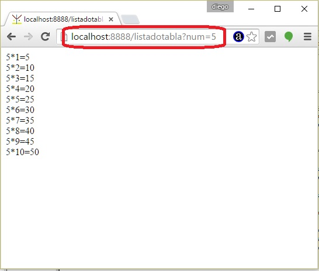

Vimos en conceptos anteriores como se recuperan los datos cargados en un formulario HTML pasados por el método POST del protocolo HTTP.
Veamos ahora como recuperar datos que llegan normalmente como parámetros en una url.
Si tenemos la siguiente url:
http://www.ventas.com/pedido?articulo=serrucho&cantidad=3
Decimos en este caso que tenemos dos parámetros con sus respectivos valores:
El parámetro 'articulo' tiene el valor 'serrucho' y el parámetro 'cantidad' tiene el valor '3'.
Problema
Desarrollar un sitio que muestre una lista de valores del 1 al 20 como hipervínculos. Cuando se presione alguno de dichos hipervínculos mostrar la tabla de multiplicar del valor seleccionado. Pasar como parámetro el valor del número seleccionado.
En el navegador debe mostrarse algo similar a estas dos páginas:

Y cuando se selecciona un número generamos una página dinámica con la tabla de multiplicar:

Para resolver este problema creemos una carpeta llamada ejercicio14 y en su interior crear el archivo ejercicio14.js y una subcarpeta llamada public con un único archivo que será nuestro menú de opciones llamado index.html.
El archivo index.html es:
<!doctype html> <html> <head> <title>Prueba</title> </head> <body> <a href="listanumeros">Lista de numeros de 1 al 20.</a></p> </body> </html>
Veamos ahora el archivo ejercicio14.js donde se encuentra nuestro programa en Node.js completo:
var http=require('http');
var url=require('url');
var fs=require('fs');
var mime = {
'html' : 'text/html',
'css' : 'text/css',
'jpg' : 'image/jpg',
'ico' : 'image/x-icon',
'mp3' : 'audio/mpeg3',
'mp4' : 'video/mp4'
};
var servidor=http.createServer(function(pedido,respuesta){
var objetourl = url.parse(pedido.url);
var camino='public'+objetourl.pathname;
if (camino=='public/')
camino='public/index.html';
encaminar(pedido,respuesta,camino);
});
servidor.listen(8888);
function encaminar (pedido,respuesta,camino) {
switch (camino) {
case 'public/listanumeros': {
listar(pedido,respuesta);
break;
}
case 'public/listadotabla': {
listarTablaMultiplicar(pedido,respuesta);
break;
}
default : {
fs.exists(camino,function(existe){
if (existe) {
fs.readFile(camino,function(error,contenido){
if (error) {
respuesta.writeHead(500, {'Content-Type': 'text/plain'});
respuesta.write('Error interno');
respuesta.end();
} else {
var vec = camino.split('.');
var extension=vec[vec.length-1];
var mimearchivo=mime[extension];
respuesta.writeHead(200, {'Content-Type': mimearchivo});
respuesta.write(contenido);
respuesta.end();
}
});
} else {
respuesta.writeHead(404, {'Content-Type': 'text/html'});
respuesta.write('<!doctype html><html><head></head><body>Recurso inexistente</body></html>');
respuesta.end();
}
});
}
}
}
function listar(pedido,respuesta) {
var info = '';
respuesta.writeHead(200, {'Content-Type': 'text/html'});
var pagina='<!doctype html><html><head></head><body>';
for(var f=1;f<=20;f++) {
pagina+='<a href="listadotabla?num='+f+'">'+f+'</a><br>';
}
pagina+='</body></html>';
respuesta.end(pagina);
}
function listarTablaMultiplicar(pedido,respuesta) {
var valor=url.parse(pedido.url,true).query.num;
respuesta.writeHead(200, {'Content-Type': 'text/html'});
var pagina='<!doctype html><html><head></head><body>';
for(var f=1;f<=10;f++) {
pagina+=valor+'*'+f+'='+(valor*f)+'<br>';
}
pagina+='</body></html>';
respuesta.end(pagina);
}
console.log('Servidor web iniciado');
La primer parte del código es lo mismo visto en conceptos anteriores. En la función encaminar capturamos cuando se presiona el hipervínculo del archivo index.html y alguno de los hipervínculos de los números del 1 al 20:
switch (camino) {
case 'public/listanumeros': {
listar(pedido,respuesta);
break;
}
case 'public/listadotabla': {
listarTablaMultiplicar(pedido,respuesta);
break;
}
Veamos primero que sucede cuando se presiona el hipervínculo listanumeros.
Llamamos a la función listar:
function listar(pedido,respuesta) {
var info = '';
respuesta.writeHead(200, {'Content-Type': 'text/html'});
var pagina='<!doctype html><html><head></head><body>';
for(var f=1;f<=20;f++) {
pagina+='<a href="listadotabla?num='+f+'">'+f+'</a><br>';
}
pagina+='</body></html>';
respuesta.end(pagina);
}
Esta función listar genera una página HTML dinámica mostrando 20 hipervínculos y disponiendo en la propiedad href el valor listadotabla pasando un parámetro llamado num que coincide con el valor mostrado por el hipervínculo.
Veamos ahora lo más importante de este concepto que es rescatar el valor del hipervínculo:
function listarTablaMultiplicar(pedido,respuesta) {
var valor=url.parse(pedido.url,true).query.num;
respuesta.writeHead(200, {'Content-Type': 'text/html'});
var pagina='<!doctype html><html><head></head><body>';
for(var f=1;f<=10;f++) {
pagina+=valor+'*'+f+'='+(valor*f)+'<br>';
}
pagina+='</body></html>';
respuesta.end(pagina);
}
Como vemos utilizamos el objeto url llamando al método parse y pasando dos parámetros: pedido.url y el valor true. Mediante el objeto que nos devuelve accedemos a la propiedad query y en este objeto tenemos una propiedad llamada igual a nuestro parámetro 'num'. Si tiene más parámetros los accedemos de la misma forma.
El resto de la función es generar la página dinámica.
Este proyecto lo puede descargar en un zip con todos los archivos desde este enlace : ejercicio14